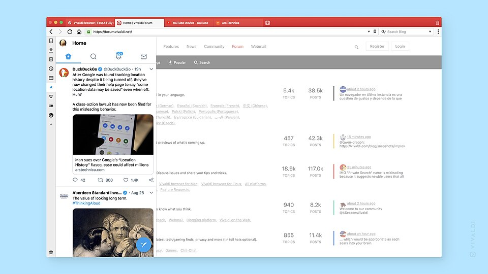

Vivaldi è un browser web sviluppato da Vivaldi Technologies, società indipendente fondata da Jon von Tetzchner, già cofondatore di Opera. Basato sul progetto open source Chromium, si rivolge soprattutto agli utenti che desiderano un maggiore controllo sulla propria esperienza di navigazione, offrendo strumenti integrati per la produttività e la protezione della privacy.
Tra le sue caratteristiche principali troviamo:

